Activity: Placing parts using mate, planar align, and axial align
Activity
In this activity you will learn the procedure for positioning parts in an assembly using the Mate, Planar Align and Axial Align relationships.
Click here to download the parts and assembly files for the activity.
If you are using Internet Explorer and a video is not displaying in your training guide, click the Tools tab (or gear icon)→Compatibility View settings, and then clear the selection of Display intranet sites in Compatibility View.
Overview
This activity demonstrates the process of positioning parts using Mate, Axial Align, Planar Align and Insert. The parts will be positioned with the Reduced Steps option turned off to better understand the workflow options in the command bar. Then the same parts will be placed with the Reduced Steps option turned on to show how the process can be streamlined.
FlashFit is a preferred method of quickly positioning parts in an assembly and will be covered in another activity. This activity forces you to manually position parts so that you will understand what is occurring when parts are positioned using Flashfit and how to change a single relationship to reposition a part if an edit is later required.
Objectives
Parts will be added to an assembly using the commands Mate, Planar Align, Axial Align and Insert.
In this activity you will:
Learn how to position parts using the commands Mate, Axial Align, Planar Align and Insert without using Reduced Steps.
Learn how the command bar reflects the workflow during the positioning of parts.
Use reduced steps to position parts with Mate, Planar Align, Axial Align, and Insert.
In this step, you will create a new assembly using the ISO Metric Assembly template. The Insert Component command will display the Parts Library. In the Parts Library, you will browse to the folder containing the training files and place them into the assembly by drag and drop.
Create a new assembly file using the ISO Metric Assembly template.
Choose File tab→Settings→Options→Assembly tab.
Select the Do not create new window when placing component check box.
On the Home tab in the Assemble group, click the Insert Component command to display the parts library. Browse to the folder containing the training files for this activity.
From the Parts Library , drag the part dome.par in the assembly window.
The first part placed in the assembly is placed as a grounded part.
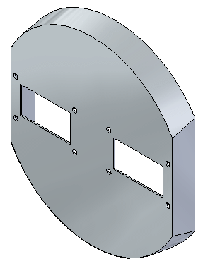
In this step you will apply a Mate relationship between two parts.
If you select the wrong face in a step, you can back up by clicking the button corresponding to that step on the command bar, and then selecting the proper geometry again.
Drag the part a1_part.par into the assembly window.
Click the Options button  on the command bar.
on the command bar.
Set the options as shown below, and then click OK. Make sure the following options are deselected:
Use FlashFit as the default placement method
Use Reduced Steps when placing parts
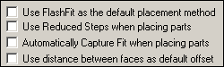
Select the Mate relationship .
The command bar reflects the current placement step in the workflow. Notice the current step is the Placement Part - Element step, and you are being prompted to select an element on the placement part.
For this relationship, select the face shown.
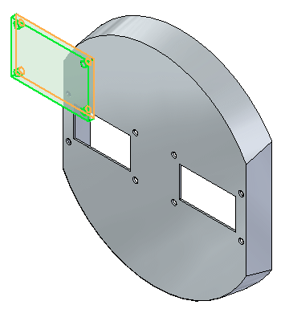
The command bar shows the Target Part step is active, and you are being prompted to select the target part. This part has the face you will apply the Mate relationship to.
Select the target part, dome.par, as shown.
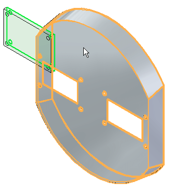
Notice the Target Part - Element step is active, and you are being prompted to select the target part element. This element is the face the Mate relationship will be applied to.
Select the face shown on dome.par.
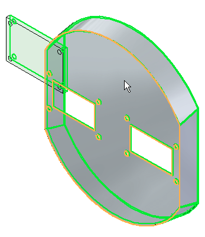
Right-click or click the OK button to Accept. The Mate relationship is applied.
The Relationship List on the command bar increments after each relationship is applied. Relationship 2 will be a Planar Align relationship between faces in both parts.
Set the relationship type to Planar Align .
Select the face shown.
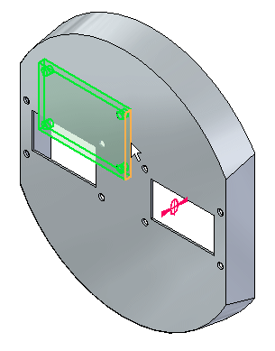
Select the target part shown.
This part has the face you will apply the Planar Align relationship to.
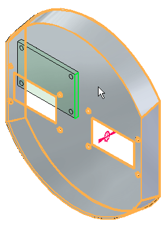
Select the face shown.
This is the face you will apply the Planar Align relationship to.
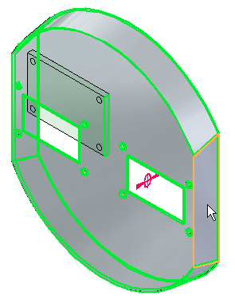
Right-click or click the OK button to accept. The Planar Align relationship is applied.
The relationship list increments to the next relationship. Relationship 3 will be an Axial Align.
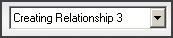
Set the relationship type to Axial Align .
The Locate Steps group on the command bar reflects the current placement step in the workflow. For this relationship, you will select a cylindrical axis.
Select the cylindrical axis shown.
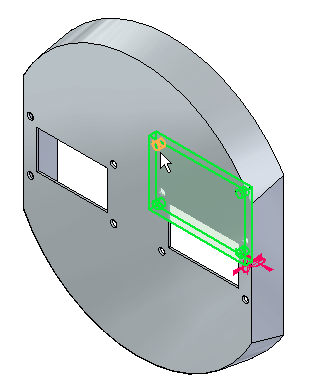
The Locate Steps group on the command bar reflects the current placement step in the workflow. This part has the cylindrical axis you will apply the Axial Align relationship to.
Select the target part shown.
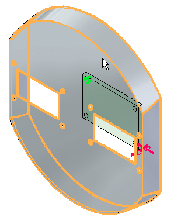
The Locate Steps group on the command bar reflects the current placement step in the workflow. This element is the cylindrical axis you will apply the Axial Align relationship to.
Select the cylindrical axis shown.
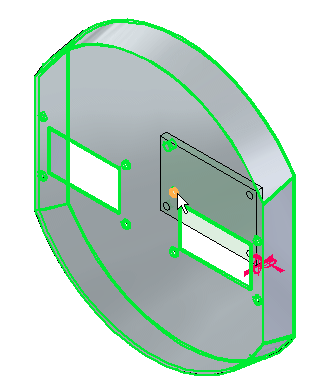
Right-click or click OK to accept. The Axial Align relationship is applied, and the part is fully positioned.
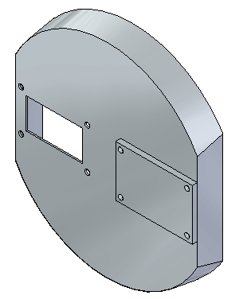
Another occurrence of the part a1_part.par will be placed. The sequence of steps will be the same except you will use fewer steps.
When the Use Reduced Steps when placing parts option is used, the step for selecting the target part is eliminated. Valid features on every part are available for selection and the target part is determined from the part containing the feature. This option is more efficient in most cases, however in large assemblies where an area can be congested with many parts, it is desirable to have more control by manually choosing the target part as was shown in the previous steps.
From the Parts Library, drag the part a1_part.par into the assembly window. You will apply a Mate relationship.
Click the Options button on the command bar.
Set the options shown. Make sure the Use Reduced Steps when placing parts option is selected, and Use FlashFit as the default placement method is cleared.
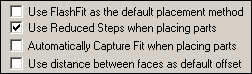
Select the Mate relationship .
The command bar reflects the placement step in the workflow. Notice the step is currently the element step and you are being prompted to select an element of the placement part. For this relationship, you will select a face.
Select the face shown.
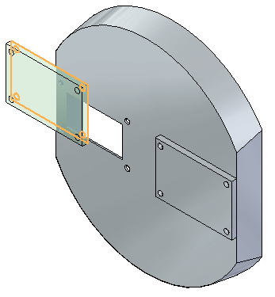
Because the Use Reduced Steps when placing parts option is set, the command bar reflects the placement step in the workflow. Notice the step is now the target part element, and you are being prompted to select the target part element. This element is the face the Mate relationship will be applied to. The target part is automatically assigned and is the part on which the target element belongs.
Select the face shown.
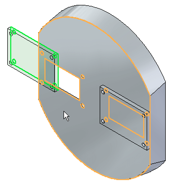
The Mate relationship is applied.
Using reduced steps, there is no need to click OK to complete. Once the target element is selected, the relationship is established.
Once this relationship is established, the relationship list increments to the next relationship. Relationship 2 will be a Planar Align.
Set the relationship type to Planar Align .
The command bar reflects the placement step in the workflow. Notice the step is currently the element step and you are being prompted to select an element of the placement part. For this relationship, you will select a face.
Select the face shown.
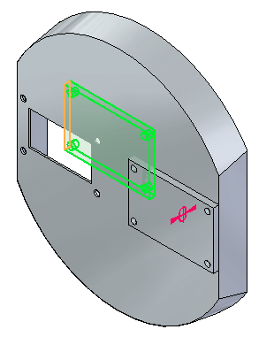
The command bar reflects the placement step in the workflow. Notice the step is now the target part element, and you are being prompted to select the target part element. This element is the face you will apply the Planar Align relationship to.
Select the target part element shown.
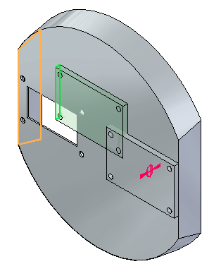
The Planar Align relationship is applied.
Once this relationship is established, the relationship list increments to the next relationship. Relationship 3 will be an Axial Align.
Set the relationship type to Axial Align .
The command bar reflects the placement step in the workflow. Notice the step is currently the element step and you are being prompted to select an element of the placement part. For this relationship, you will select a cylindrical axis.
Select the cylindrical axis shown.
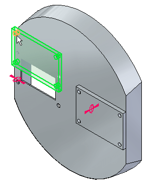
The command bar reflects the placement step in the workflow. Notice the step is now the target part element, and you are being prompted to select the target part element. This element is the cylindrical axis you will apply the Axial Align relationship to.
Select the cylindrical axis shown.
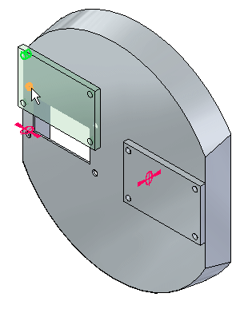
The Axial Align relationship is applied, and the part is fully positioned.
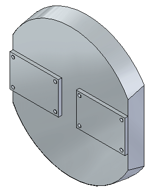
The Insert command will be used to position a fastener in a hole.
Insert requires a Mate relationship and an Axial Align relationship. Once you have established these relationships, the rotation of the aligned axis is locked and the part is fully positioned.
Drag the part 10mm_fastener.par into the assembly window.
Select the Insert command .
The Mate relationship will be established first, then the Axial Align relationship. Because of the number of faces to choose from, you will use QuickPick to aid in the selection.
For the Mate relationship, select the face shown.
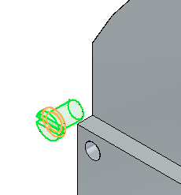
Select the target face for the Mate relationship as shown.
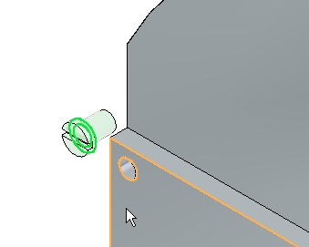
For the Axial Align relationship, select the cylindrical axis shown.
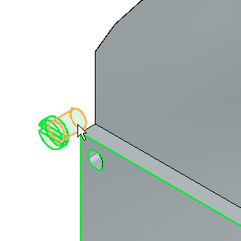
For the target face of the Axial Align relationship, select the face shown.
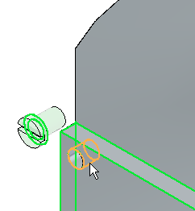
The fastener is placed and fully positioned, with the rotation locked. Click the Select command to end the command. Close the assembly document without saving.
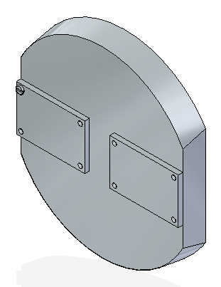
An equivalent and more efficient way of placing fasteners is done by matching circular edges of the fastener and the hole using the FlashFit command. This is covered in another activity.
In this activity you learned the workflow for establishing relationships needed to position parts in an assembly. You also learned that using the reduced steps option streamlines the process of positioning parts.
Click the Close button in the upper-right corner of the activity window.